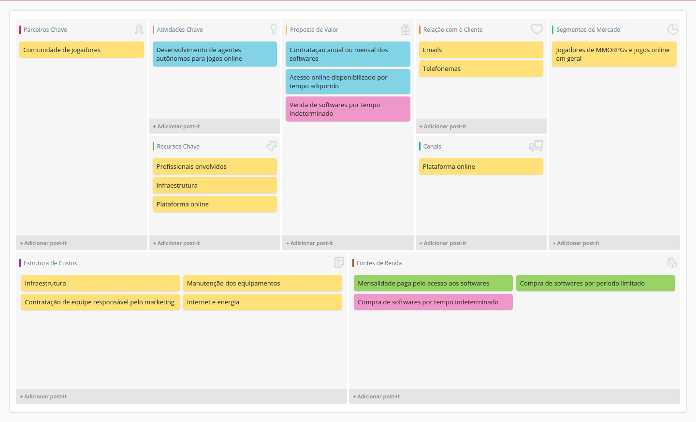

Oficina Video Analytics
I3D - Quo Vadis, Action Recognition? A New Model and the Kinetics Dataset
Matheus Pedroza
Atividades desenvolvidas - inferência
- Conversão do modelo I3D para Tensorflow
- Criação de scripts para leitura dos modelos pré-treinados no dataset Kinetics
- Criação de funções de pré-processamento dos vídeos
- Cálculo do optical flow
- Criação do ambiente de execução (Docker)
- Criação de scripts para execução de inferência em vídeosCriação do ambiente de execução (Docker)
Atividades desenvolvidas - inferência
- Criação do ambiente de execução (Docker)
- Criação de scripts para execução de inferência em vídeosCriação do ambiente de execução (Docker)
- O código desenvolvido pode ser encontrado no repositório da oficina
- http://serv113/gitlab/Oficinas/VideoAnalytics2018/tree/i3d/i3d
Exemplo de inferência em vídeo
